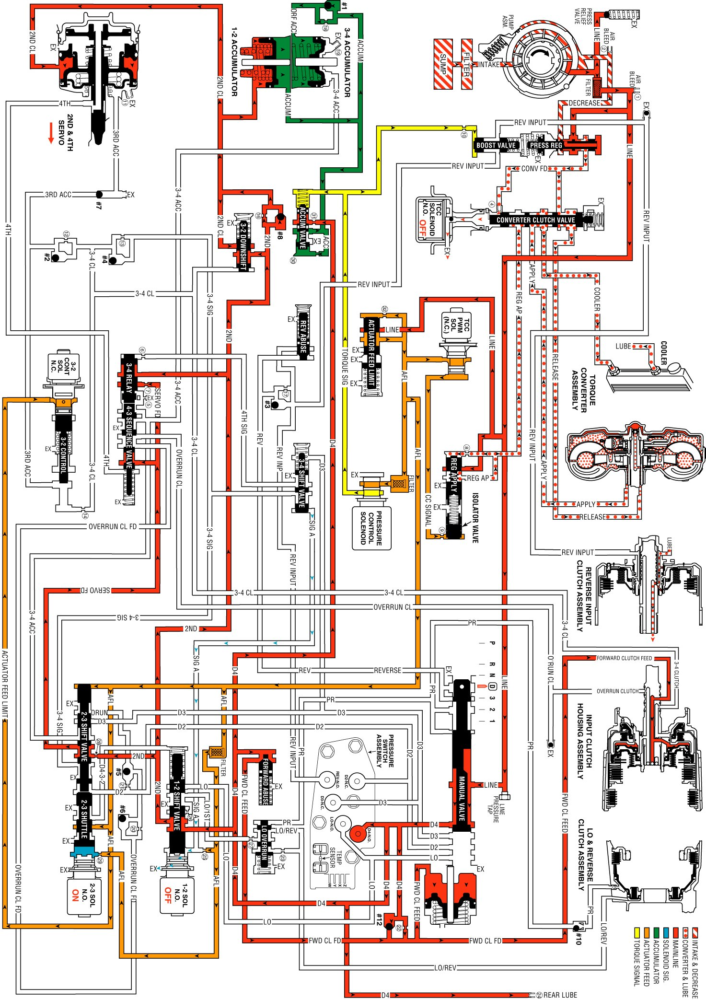

Overdrive Range, Second Gear
Overdrive Range, Second Gear
As vehicle speed increases and other operating conditions are appropriate, the PCM de-energizes the 1-2 shift solenoid valve in order to shift the transmission to second gear.
1-2 Shift Solenoid (SS) Valve
De-energized (turned OFF) by the PCM, the normally open solenoid opens and signal A fluid exhausts through the solenoid.
2-3 Shift Solenoid (SS) Valve
Important: The actuator feed limit (AFL) fluid continues to feed the signal A fluid circuit through orifice #25. However, the exhaust port through the solenoid is larger than orifice #25 in order to prevent a pressure buildup in the signal A fluid circuit. Exhausting signal A fluid is represented by the blue arrows.
Energized (ON) as in first gear, the 2-3 shift solenoid valve blocks signal B fluid from exhausting through the solenoid. This maintains signal B fluid pressure at the solenoid end of the 2-3 shift valve.
1-2 Shift Valve
Without signal A fluid pressure, spring force moves the valve into the upshift position. D4 fluid is routed through the valve and fills the 2nd fluid circuit.
1-2 Shift Checkball (#8)
The 2nd fluid pressure seats the #8 checkball, flows through orifice #16, and fills the 2nd clutch fluid circuit. This orifice helps control the 2-4 band apply rate.
2-4 Servo Assembly
The 2nd clutch fluid pressure moves the #8 checkball, flows through orifice #16 and fills the 2nd clutch fluid circuit. This orifice helps to control the 2-4 band apply rate.
1-2 Accumulator
The 2nd clutch fluid pressure also moves the 1-2 accumulator piston against the spring force and the accumulator fluid pressure. This action absorbs the initial 2nd clutch fluid pressure in order to cushion the 2-4 band apply rate. Also, the movement of the 1-2 accumulator piston forces some accumulator fluid out of the accumulator assembly. This accumulator fluid is routed back to the accumulator valve.
Accumulator Valve
The accumulator fluid forced out of the 1-2 accumulator is orificed (#30) to the end of the accumulator valve. This pressure moves the valve against the spring force and the torque signal fluid pressure in order to regulate the exhaust of excess accumulator fluid. This regulation provides additional control for the 2-4 band apply rate. The fluid circuit shows the exhaust of the accumulator fluid during the shift by the arrow directions in the accumulator fluid circuit.
2-3 Shift Valve Train
The signal B fluid pressure from the 2-3 shift solenoid valve holds the valve train in the downshift position. The 2nd fluid is routed through the 2-3 shuttle valve and fills the servo feed fluid circuit.
3-4 Relay Valve and 4-3 Sequence Valve
Spring force holds these valves in the downshift position (first, second and third gear positions). The 2nd fluid is blocked by the 3-4 relay valve and the servo feed fluid is blocked by both valves in preparation for a 3-4 upshift.
3-2 Downshift Valve
Spring force holds the valve closed, blocking the 2nd fluid and the 2nd clutch fluid. This valve is used in order to help control the 3-2 downshift.
3-2 Control Solenoid Valve
In second gear, the PCM energizes the normally closed solenoid. This opens the AFL fluid circuit to fill the 3-2 signal fluid circuit.
3-2 Control Valve
The 3-2 signal fluid pressure moves the valve against the spring force. This action does not affect the transmission operation in second gear.
3-4 Shift Valve
Signal A fluid pressure exhausts and spring force moves the valve into the downshift position (second and third gear positions).
Torque Converter Clutch
TCC Solenoid Valve
Under normal operating conditions, in Overdrive Range-Second Gear, the PCM keeps the normally open TCC solenoid valve de-energized. Converter feed fluid exhausts through the open solenoid, and spring force keeps the converter clutch apply valve in the release position.
Overdrive Range, Second Gear
Overdrive Range, Second Gear:
